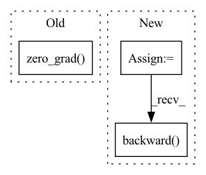

Pattern ID :39957
Before Change
)
loss.backward()
optimizer.step()
optimizer.zero_grad()
return loss.detach()
def evaluate_batch(self, batch, stage):After Change
self.g_optimizer.step()
self.g_optimizer.zero_grad()
predictions = self.compute_forward(inputs, sb.Stage.TRAIN)
d_loss = self.compute_objectives(
predictions, inputs, sb.Stage.TRAIN, "discriminator"
)
d_loss.backward()
self.d_optimizer.step()
self.d_optimizer.zero_grad()
return g_loss.detach() + d_loss.detach()In pattern: SUPERPATTERN
Frequency: 3
Non-data size: 3
Instances Fragment ID: 113695114
Project Name: speechbrain/speechbrain
Commit Name: de699fa49ebc3f5b1cca4061a41ddf44e8770c66
Time: 2020-09-24
Author: plantinga.peter@protonmail.com
File Name: recipes/minimal_examples/neural_networks/enhance_GAN/example_enhance_gan_experiment.py
M Class Name: EnhanceGanBrain
N Class Name: EnhanceGanBrain
M Method Name: fit_batch(2)
N Method Name: fit_batch(2)
M Parent Class: sb.Brain
N Parent Class: sb.Brain
M File Name: recipes/minimal_examples/neural_networks/enhance_GAN/example_enhance_gan_experiment.py
N File Name: recipes/minimal_examples/neural_networks/enhance_GAN/example_enhance_gan_experiment.py
M Start Line: 48
M End Line: 57
N Start Line: 45
N End Line: 63
Before Change
// Update the policy by maximising the clipped PPO objective
policy_ratio = (trajectories["log_prob_actions"] - trajectories["old_log_prob_actions"]).exp()
policy_loss = -torch.min(policy_ratio * trajectories["advantages"], torch.clamp(policy_ratio, min=1 - ppo_clip, max=1 + ppo_clip) * trajectories["advantages"]).mean()
actor_optimiser.zero_grad()
policy_loss.backward()
actor_optimiser.step()
After Change
// Fit value function by regression on mean squared error
value_loss = F.mse_loss(trajectories["values"], trajectories["rewards_to_go"])
// Add entropy regularisation
entropy_loss = -trajectories["entropies"].mean()
agent_optimiser.zero_grad()
(policy_loss + value_loss_coeff * value_loss + entropy_loss_coeff * entropy_loss).backward()
clip_grad_norm_(agent.parameters(), 1) // Clamp norm of gradients
agent_optimiser.step()
Fragment ID: 113695112
Project Name: kaixhin/imitation-learning
Commit Name: fd3ee1838359dcc6da9836b6249396e595ff90db
Time: 2020-04-16
Author: design@kaixhin.com
File Name: training.py
M Class Name: AnonimousClass
N Class Name: AnonimousClass
M Method Name: ppo_update(7)
N Method Name: ppo_update(6)
M Parent Class:
N Parent Class:
M File Name: training.py
N File Name: training.py
M Start Line: 33
M End Line: 50
N Start Line: 34
N End Line: 51
Before Change
out = model(**inputs_dict).sample
// run the backwards pass on the model. For backwards pass, for simplicity purpose,
// we won"t calculate the loss and rather backprop on out.sum()
model.zero_grad()
out.sum().backward()
// now we save the output and parameter gradients that we will use for comparison purposes with
// the non-checkpointed run.After Change
// run the backwards pass on the model. For backwards pass, for simplicity purpose,
// we won"t calculate the loss and rather backprop on out.sum()
model_2.zero_grad()
loss_2 = (out_2 - labels).mean()
loss_2.backward()
// compare the output and parameters gradients
self.assertTrue((loss - loss_2).abs() < 1e-5)
named_params = dict(model.named_parameters()) Fragment ID: 113695113
Project Name: huggingface/diffusers
Commit Name: 22963ed82682465b5fdfd1bd474e1b0f2579b4db
Time: 2022-10-10
Author: patrick.v.platen@gmail.com
File Name: tests/test_models_unet.py
M Class Name: UNet2DConditionModelTests
N Class Name: UNet2DConditionModelTests
M Method Name: test_gradient_checkpointing(1)
N Method Name: test_gradient_checkpointing(1)
M Parent Class: unittest.TestCase,ModelTesterMixin
N Parent Class: unittest.TestCase,ModelTesterMixin
M File Name: tests/test_models_unet.py
N File Name: tests/test_models_unet.py
M Start Line: 273
M End Line: 333
N Start Line: 273
N End Line: 308